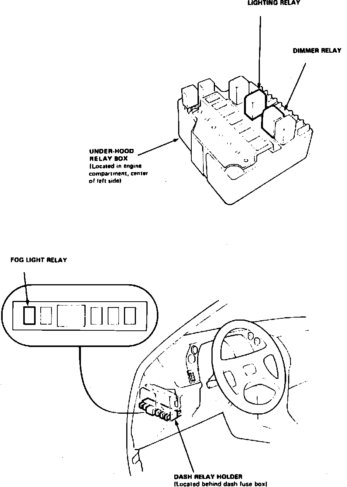

Operation CHARM
: Car repair manuals for everyone.
Home
>>
Acura
>>
1987
>>
Legend Coupe V6-2494cc 2.5L SOHC FI
>>
Repair and Diagnosis
>>
Relays and Modules
>>
Relays and Modules - Lighting and Horns
>>
Headlamp Relay
>>
Locations
>>
Component Locations
Component Locations
Lighting System Components.:

LH Side Of Engine Compartment
Applicable to: 1987 Legend